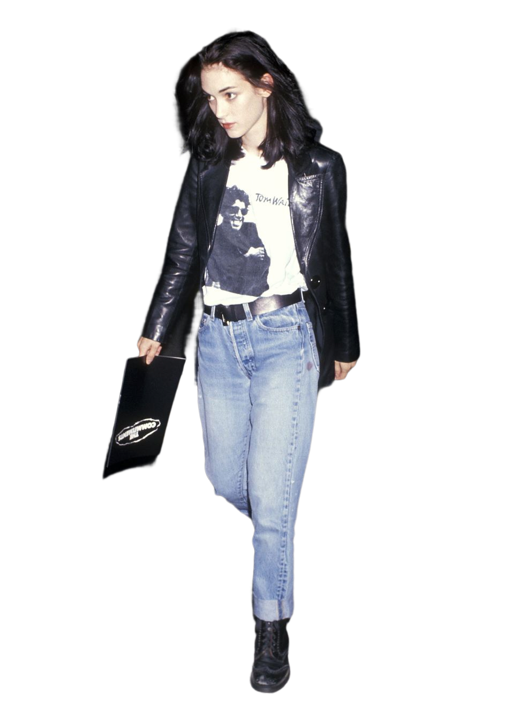
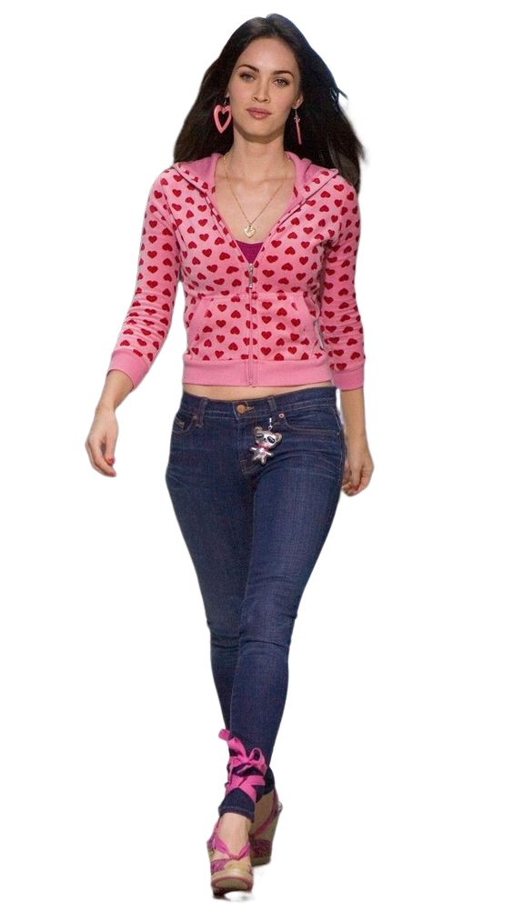

90`s
The beginning of the 1990s was the peak of the Supermodel era. Among the most celebrated were Linda Evangelista, Cindy Crawford, Naomi Campbell, and Christy Turlington, known as “the original supermodels”...

00`s
Fashion at the rise of the 21th century was similar to the one in the late 1990s. But due to globalization and the rise of fast fashion, when affordable clothes inspired by runway ...

20`s
The outbreak of Covid had a long-lasting impact on fashion. People adopted cozy and practical clothing, and activewear became a fashion trend again...